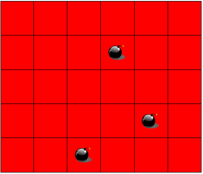

Enunciado Geral
Tendo seus precursores na década de 1960, com os primeiros jogos para mainframe, o Campo Minado é um jogo que se popularizou com sua inclusão no Windows Entertainment Pack disponibilizado pela Microsoft, em 1990, para a versão 3.1 de seu sistema operacional. Basicamente, o jogo consiste em um grid bidimensional em que são posicionadas bombas em posições escolhidas aleatoriamente. Inicialmente o grid é apresentado para o usuário com todas as células “fechadas” (conteúdo oculto) e o objetivo do jogo é que o usuário consiga “abrir”, através de cliques com o mouse, todas as células que não contenham bombas.
Se o usuário clicar em uma célula que contém uma bomba, todas as bombas do grid são exibidas e o usuário perde aquele jogo. Caso o usuário clique em uma célula que não contenha uma bomba, esta célula se torna “aberta” e em seu conteúdo é exibido o número de bombas que estão presentes em sua vizinhança (vide Figura 1).
Caso não haja nenhuma bomba na vizinhança da célula clicada pelo usuário, esta célula se torna “aberta” e o processo de abertura se repete recursivamente para todas as células na vizinhança que ainda não estão abertas. Ou seja, se uma célula vizinha estiver na vizinhança de alguma bomba, o número de bombas na vizinhança é exibido. Caso tal célula vizinha não contenha nenhuma bomba em sua vizinhança, o processo se repete recursivamente para as células vizinhas a esta célula.
Para ilustrar, considere o campo minado apresentado na Figura 2(a), que contém três bombas posicionadas aleatoriamente (exibidas no grid apenas para facilitar a explicação). Considere então que o usuário clique na primeira célula no canto superior esquerdo (destacada em azul na Figura 2(b)): como esta célula não contém bombas, o jogo continua. Além disso, como esta célula também não contém bombas em sua vizinhança, o processo de “abertura” é repetido para todas as células em sua vizinhança (destacadas em amarelo na Figura 2(b)). Nenhuma das células em amarelo contém bombas em sua vizinhança, então o processo se repete, novamente, para as células "fechadas" vizinhas a estas, até que sejam encontradas células que contenham bombas ao redor. Neste exemplo, um único clique na célula destacada em azul na Figura 2(b) é responsável por revelar o conteúdo de 14 células do grid (células em azul, amarelo e branco na Figura 2(b)). Para que o usuário vença este jogo, ele deve conseguir abrir todas as 27 células do grid que não contenham bombas.

Neste Projeto Final da disciplina, cada grupo deverá desenvolver e implementar uma plataforma online, usando as ferramentas estudadas na disciplina (HTML, CSS, JavaScript e PHP), que permita que um jogador cadastrado jogue partidas de uma versão específica do jogo de Campo Minado. A versão de Campo Minado a ser implementada segue regras parecidas com as da versão clássica do jogo, mas deve atender às seguintes especificações:
- O usuário deverá poder escolher as dimensões do grid e o número de bombas no campo, sendo que o número de bombas deve respeitar o tamanho do grid.
- O usuário também poderá escolher entre duas modalidades de partida: Clássica e Rivotril. No modo Rivotril, haverá um contador de tempo (timer), e o jogador deverá encerrar a partida antes que tal contador chegue a zero. Caso ele não consiga, a partida contará como uma "derrota" em seu histórico. Caberá ao grupo definir o tempo de cada partida do modo Rivotril, em função do tamanho do tabuleiro.
- O sistema deverá manter um histórico com o resultado de todas as partidas disputadas pelo usuário. Este histórico deve conter as seguintes informações sobre cada partida jogada: nome do jogador, dimensões do campo utilizado na partida, número de bombas no campo, modalidade da partida, tempo gasto até a vitória ou derrota (contado a partir do primeiro clique no campo), resultado da partida (vitória ou derrota) e data/hora em que a partida foi disputada.
- Para facilitar a correção da atividade, o jogo deverá contar com um botão Trapaça que, quando pressionado, exibirá temporariamente todas as células do tabuleiro, sem interferir na dinâmica do jogo. Após o tempo de trapaça permitido, as células que ainda não haviam sido abertas pelo usuário voltam ao seu estado original.
A implementação do Campo Minado deverá ser toda feita em JavaScript, para execução no front-end. No entanto, a plataforma online do jogo também deverá contar com um módulo em back-end, responsável por gerenciar a autenticação dos jogadores, o armazenamento e recuperação dos resultados de cada partida jogada e a elaboração de um ranking dos 10 melhores jogadores de Campo Minado cadastrados na plataforma. Mais informações sobre o front-end e back-end são dadas a seguir.
Front-end
A primeira tela a ser exibida para qualquer usuário que acesse o sistema deve conter dois campos de um formulário para autenticação: um para o usuário e o outro para a senha (além de um botão para enviar os dados fornecidos). Além disso, deverá haver um link para uma página de cadastro no sistema, caso o usuário não possua usuário e senha.
Na página de cadastro o sistema deverá solicitar os seguintes dados de um novo jogador: nome completo, data de nascimento, CPF, telefone e e-mail, além do username (único) e da senha para acesso ao sistema. Estes dados deverão ser mantidos na plataforma enquanto a conta do jogador estiver ativa.
Uma vez autenticado no sistema, o jogador deverá ser redirecionado para uma página que contenha o Campo Minado implementado em JavaScript. Além do jogo em si, nessa página o usuário deverá visualizar pelo menos as seguintes informações:
- Tempo da partida até o momento (caso iniciada), configuração do tabuleiro (dimensões e número de bombas), modalidade de partida e, no caso do modo Rivotril, o tempo restante para conclusão da partida.
- Histórico com os resultados de todas as partidas jogadas anteriormente por aquele jogador. Tal histórico deve exibir as seguintes informações: nome do jogador, dimensões do campo utilizado na partida, número de bombas no campo, modalidade da partida, tempo gasto até a vitória ou derrota (contado a partir do primeiro clique no campo), resultado da partida (vitória ou derrota) e a data/hora em que a partida foi disputada.
- Botão de ativação do modo Trapaça.
Na página que contém o Campo Minado o usuário também deverá ter acesso a hyperlinks que o levam a duas outras páginas do sistema, além de uma opção para desconectar e retornar à página de login: uma página com o ranking global de jogadores e outra onde ele poderá editar suas informações pessoais. Nesta página de edição de informações pessoais, os campos data de nascimento, CPF e username NÃO poderão ser alterados.
Por fim, na página de ranking global de jogadores o sistema deverá mostrar os usernames e dados da partida para 10 jogadores, obtidas dentre todos os jogadores registrados no sistema. A escolha destas partidas deverá ser feita em função do tamanho do tabuleiro e tempo de partida: deverão ser exibidos os dados das partidas disputadas (e vencidas) nos 10 maiores tabuleiros. Caso mais de um jogador tenha disputado uma partida com as mesmas dimensões de tabuleiro, deverão ser exibidos os dados do jogador que venceu a partida em menor tempo.
Ao final de cada partida, o sistema deverá permitir ao usuário escolher se ele deseja ou não iniciar uma nova partida.
ATENÇÃO 1: todas as páginas exibidas no front-end deverão seguir o padrão HTML 5 e contar com folhas de estilo prioritariamente externas, escritas em CSS (versão 2 ou superior). Tanto os documentos HTML enviados pela plataforma ao navegador dos usuários quanto as folhas de estilo devem ser validadas nos validadores de HTML e CSS do W3C!
ATENÇÃO 2: NÃO é recomendado o uso de templates CSS neste trabalho, mas, caso o grupo queira usá-los, é mandatório indicar isto explicitamente no site e fornecer um link para a(s) fonte(s).
ATENÇÃO 3: para o desenvolvimento do jogo, será necessário estudar o funcionamento de eventos temporizados em JavaScript.
Back-end
Como já mencionado, o back-end da plataforma do Campo Minado será responsável por gerenciar a autenticação dos jogadores, o armazenamento e recuperação dos resultados de cada partida jogada e a elaboração do ranking de jogadores cadastrados. Toda a implementação do back-end deverá ser feita em PHP e os dados armazenados em um Sistema Gerenciador de Bancos de Dados (SGBD) MySQL ou MariaDB.
Além do armazenamento persistente dos dados e sua recuperação sempre que necessário, caberá à implementação do back-end garantir que apenas usuários autenticados tenham acesso às páginas da plataforma. Caso um usuário não esteja autenticado, ele NÃO poderá acessar nenhuma página do sistema exceto a página de login (página inicial). Para isso, deverá ser utilizado o mecanismo de sessões de PHP.
As tabelas MySQL/MariaDB em que ficarão armazenados os dados tantos das partidas quanto de usuários do sistema devem ser definidas pelo grupo. A partir dessas definições, deverá ser entregue um script PHP (separado do projeto principal) para criação das tabelas necessárias para o correto funcionamento do sistema, além de um arquivo-texto com instruções para sua utilização.
ATENÇÃO 1: NÃO é permitido o uso de frameworks PHP.
Regras para o trabalho
- Esse Projeto deverá ser desenvolvido em grupos de 4 a 5 alunos.
- Como consta no Plano de Ensino da Disciplina, a nota desse Projeto corresponderá a 75% da média de cada aluno.
- Ao longo do semestre, cada grupo deverá entregar três parciais do Projeto, correspondentes a versões incrementais do sistema (os pesos de cada parcial na nota final do Projeto estão no Plano de Ensino da Disciplina).
- A entrega de cada parcial do Projeto será composta por dois arquivos: Um arquivo .ZIP contendo todos os arquivos necessários para configuração e execução do sistema (.html, .js, .php, .css, imagens etc.) bem como um TXT ou PDF com instruções necessárias para configuração e uso do sistema e O link para um vídeo de apresentação da parcial entregue pelo grupo; e Um arquivo .XLSX contendo o detalhamento da contribuição de cada membro do grupo. Este arquivo corresponde ao modelo disponível aqui, preenchido pelo grupo.
- Cada parcial entregue deverá ser acompanhada de um vídeo, de no máximo 10 minutos, em que todos os membros do grupo apresentam o que foi desenvolvido naquela parcial. Espera-se uma apresentação não apenas do funcionamento do sistema, mas da estrutura interna do que foi desenvolvido naquela parcial.
- Todo o código-fonte em JavaScript deve estar contido em arquivos .JS externos (exceto as chamadas às funções implementadas, que podem estar no HTML conforme a necessidade).
- Todas as definições de formatação geral das páginas deverão estar contidas em folhas de estilo CSS externas. É obrigatório o uso de folhas de estilo em todas as páginas.
- Todos os documentos HTML gerados deverão seguir a versão 5 (HTML5).
- Tanto os arquivos HTML quando as folhas de estilo CSS deverão ser validados no site do W3C.
- Cópias de outros grupos ou da internet serão penalizadas como descrito no Plano de Ensino da Disciplina.
- Não serão aceitos trabalhos entregues fora do prazo.